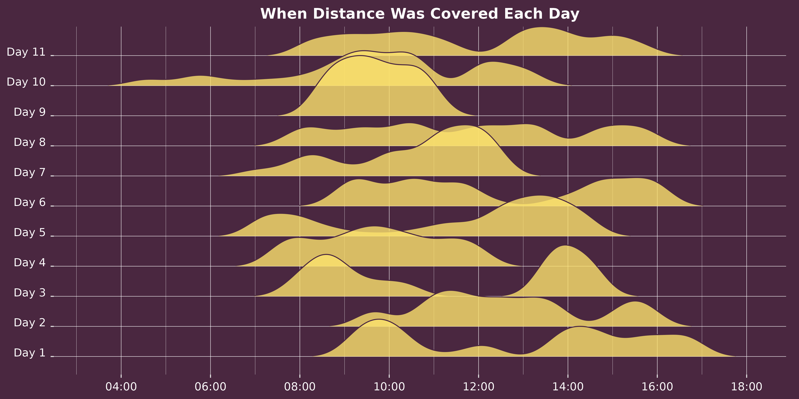
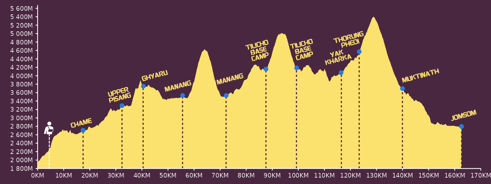

When Distance Was Covered
- Starting at Day 1 at the bottom, each ridgeplot illustrates when we covered most of the day's distance.
The Annapurna Circuit is a long-distance trek in Nepal that loops around the Annapurna massif. The full route is about 230 km, depending on where you start
and finish and whether you use transport. It is a teahouse trek, so you sleep and eat in simple guesthouses along the way, with modest rooms, basic facilities
and plenty of dal bhat.
The circuit is known for big altitude shifts, quiet valleys, and lived-in villages with Gurung and Tibetan influences, all set against Annapurna and Dhaulagiri.
Side trips to high lakes are common, including Ice Lake and Tilicho. The defining feature is Thorung La Pass at 5,416 m, the highest trekkable mountain pass in
the world, which gives the route its reputation for serious but achievable adventure.
Given that we only had 11 days, Spike and I completed 162km of the circuit - without a guide or porter. Starting in Dharapani, we made sure to cater our itinerary
for the Ice Lake near Manang and for the famed Tilicho Lake, finally finishing our trek in Jomsom.
WHAT DOES THE FOLLOWING WEB PAGE ENTAIL
View on GitHub

